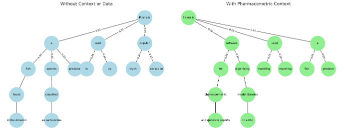
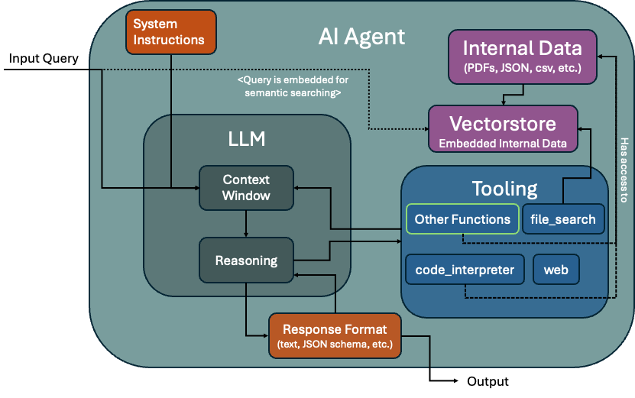
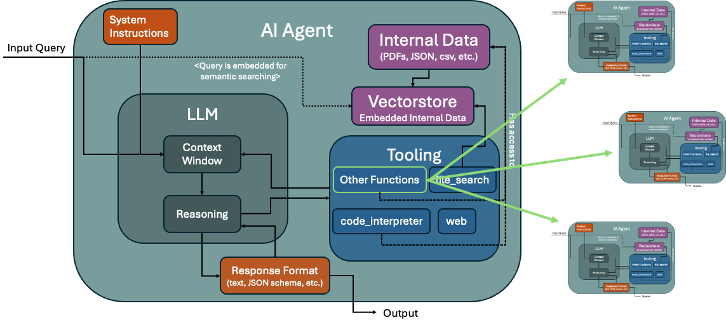

How Large Language Models Work
Large language models (LLMs) do not "think" like humans. Instead, they use probabilistic modeling to predict the next token given the tokens that came before. In modern systems, that prediction is usually produced by transformer-based neural networks, although some newer designs combine transformers with alternative sequence models for efficiency and long-context handling. During training, an LLM learns statistical patterns in grammar, syntax, semantics, and context from very large text and code datasets; at inference time, it generates text by sampling from a probability distribution over possible continuations. The original transformer architecture introduced the attention mechanism that underlies most LLMs (Vaswani et al., 2017-06-12), and recent long-context and hybrid designs show that not all competitive language models rely on a plain dense transformer alone (Lieber et al., 2024-05-31).
Think of it like a sophisticated autocomplete system. When you start typing a sentence, the model considers thousands of possible ways to continue, assigning each option a probability score based on what it learned during training. The actual process involves complex neural network mathematics with millions, billions, or even trillions of parameters, but we can visualize this decision-making process as a branching tree of possibilities.
A useful modern refinement is that not every LLM activates all of its parameters for every token. Some recent systems use mixture-of-experts architectures, where a routing mechanism sends each token to a small subset of specialized neural subnetworks instead of the entire model. This can lower training and inference cost while preserving high total capacity. For example, Mixtral 8x7B uses a sparse mixture-of-experts design with 8 experts and top-2 routing (Jiang et al., 2024-01-08), DBRX is a large MoE model trained with fine-grained expert routing (Databricks, 2024-03-27), and Llama 4 Maverick and Scout are described by Meta as mixture-of-experts models (Meta, 2025-04-05).
Researchers are also exploring alternatives to standard attention for handling very long sequences. Attention compares each token with many others, which becomes expensive as context windows grow. Mamba introduced a selective state-space model that scales linearly with sequence length (Gu and Dao, 2023-12-01), and Jamba combined transformers with Mamba layers in a hybrid architecture aimed at long context and efficient serving (Lieber et al., 2024-03-29). These designs matter because users increasingly expect models to work over long documents, codebases, audio transcripts, and multi-file workflows.
Adding extra context, such as a document or search results, dramatically changes which paths the model is likely to take. With retrieval-augmented generation (RAG), a system first retrieves relevant information, often from vector search, keyword search, or a hybrid of both, and then includes that evidence in the prompt or in an intermediate reasoning step. This can improve factuality and freshness because the model is conditioned on external evidence rather than relying only on what was compressed into its parameters during training. The original RAG formulation combined neural retrieval with sequence generation (Lewis et al., 2020-05-22), and recent surveys describe newer retrieval pipelines such as hybrid search, reranking, query rewriting, and agentic retrieval workflows (Gao et al., 2023-12-18).

Figure: A simplified visualization of how LLMs evaluate word choices. While the actual neural network process involves complex mathematical transformations across millions of parameters, this decision tree illustrates the core concept: LLMs consider multiple possible continuations and select based on learned probability patterns. Additional context (shown in green) can dramatically shift these probabilities toward more informed responses.
Recent retrieval work also makes RAG more reliable than early examples suggested. In practice, strong systems now combine several steps: query rewriting to better express the user request, hybrid retrieval that mixes dense vectors with keyword or metadata filters, reranking to sort the most useful passages higher, and citation-aware prompting so the model grounds claims in retrieved evidence. A recent survey of retrieval-augmented generation highlights these components as core design patterns (Gao et al., 2023-12-18), while Self-RAG showed that a model can learn when to retrieve, how to critique its own draft, and when retrieved evidence is actually helpful (Asai et al., 2023-10-18). For readers, the key idea is simple: better retrieval usually matters as much as a bigger model when the task depends on up-to-date or domain-specific knowledge.
As models scale, their capabilities often improve, but the story is now understood as more nuanced than "bigger models suddenly become intelligent." Early scaling-law work found predictable gains from increasing model size, data, and compute (Kaplan et al., 2020-01-23), while later work argued that some apparent emergent abilities partly reflect how benchmarks are measured (Schaeffer et al., 2023-04-28). More recent systems also improve performance through better data curation, architecture choices, post-training, tool use, and inference-time reasoning, not just raw parameter count. At the same time, two agents built from the same base model can still behave differently if they have distinct system prompts, retrieved context, tools, or memory policies.
AI Agent Architectures: From Monolithic to Distributed Systems
Understanding how AI scales requires examining the evolution from single-agent to multi-agent architectures, a fundamental shift in how we design intelligent systems. Think of this evolution like the difference between a Swiss Army knife and a specialized toolbox: one tool trying to do everything versus multiple specialized tools working together.
Single-Agent Architecture: The Digital Swiss Army Knife
New framework direction: stateful agents, not just prompt chains
Recent agent frameworks have moved from simple prompt pipelines toward stateful graphs, explicit tool routing, and observable execution traces. LangGraph is positioned by LangChain as a framework for building stateful, multi-actor applications with LLMs (LangChain, 2024), while Microsoft's AutoGen describes a framework for multi-agent conversation and tool use (Microsoft, 2024). In 2025, model providers also started shipping first-party orchestration layers: OpenAI introduced the Agents SDK and Responses API as building blocks for agents with tools, handoffs, and tracing (OpenAI, 2025), and Google released the Agent Development Kit, or ADK, for building and deploying multi-agent systems (Google, 2025). The practical takeaway is that modern "single-agent" systems increasingly include memory, tool permissions, retries, and state machines, making them more like compact operating systems than simple chatbots.
Imagine an AI agent as a highly capable assistant working alone in a library. This monolithic AI agent operates as a unified system where one Large Language Model (LLM) handles all cognitive tasks within a single execution context: reading, analyzing, reasoning, and responding sequentially.

Figure: A single AI agent manages all tasks through one LLM core. Like a skilled librarian working alone, it maintains memory, accesses information, and uses tools, but everything happens in sequence, creating bottlenecks when complexity increases.
Key Characteristics:
A major 2024-2025 change is the rise of native tool use inside foundation models. Anthropic documents tool use as a core capability of Claude models, including structured function calling and external actions (Anthropic, 2025). OpenAI's Responses API supports built-in tools including web search, file search, and computer use (OpenAI, 2025), and Google describes Gemini's function calling, code execution, and grounding capabilities for agentic workflows (Google, 2025). This means a single agent can now search, retrieve files, run code, and operate interfaces in one loop, but each added capability also expands the reliability and safety surface that developers need to control.
- Linear Processing: Tasks are handled one after another, like reading a book from start to finish
- Centralized Memory: All information flows through one context window
- Tool Integration: One agent learns to use all available tools and data sources
- Simplicity: Easier to design, debug, and understand, but limited by single-threaded thinking
Multi-Agent Orchestration: The Specialized Research Team
Orchestration patterns that are actually being used
In practice, the most common multi-agent designs are not open-ended societies of bots. They are structured workflows with clear roles. OpenAI's Agents SDK documentation describes handoffs, guardrails, and tracing for coordinating specialized agents (OpenAI, 2025), while Google's ADK documentation highlights hierarchical and multi-agent orchestration patterns (Google, 2025). Across frameworks, several patterns appear repeatedly:
- planner-executor, where one agent decomposes a task and another performs tool actions;
- supervisor-worker, where a lead agent delegates to specialists and checks outputs;
- debate or critic loops, where one agent proposes and another verifies;
- human-in-the-loop checkpoints, where sensitive actions require approval.
These patterns reflect a broader lesson from production deployments: explicit coordination usually outperforms unconstrained autonomy when cost, latency, and auditability matter.
Now imagine transforming that lone librarian into an entire research department. Multi-agent architectures represent a paradigm shift toward distributed AI systems, like having a research director coordinating multiple specialists, each expert in their domain.

Figure: Multiple specialized AI agents work in parallel under an orchestrator's guidance. Like a research team where experts in different fields collaborate simultaneously, each agent has dedicated LLMs, memory systems, and tool access, enabling parallel processing and specialized expertise.
How This Changes Everything:
Real-world deployments now provide clearer evidence of what multi-agent systems can and cannot do. SWE-agent reports state-of-the-art results on software engineering benchmarks by combining language models with tools and issue-solving workflows (Princeton NLP, 2025), and OpenHands is an open-source software-development agent platform built around coding, terminal, and browser actions (All Hands AI, 2025). On the enterprise side, Salesforce describes Agentforce as a platform for deploying autonomous agents across CRM workflows with human oversight and data-grounded actions (Salesforce, 2025), and Microsoft documents Copilot Studio support for autonomous agents that can trigger business processes and connect to enterprise systems (Microsoft, 2025). The common pattern is narrower deployment scope than early marketing implied: organizations are getting value first from bounded tasks such as support triage, internal research, coding assistance, and workflow automation.
- Parallel Thinking: Multiple agents can work simultaneously on different aspects of complex problems
- Domain Expertise: Instead of one generalist, you have specialists (a research agent, analysis agent, verification agent, synthesis agent)
- Scalable Intelligence: Add new agents for new capabilities without rebuilding the entire system
Why Multi-Agent Systems Matter: The Technical Revolution
The shift from single-agent to multi-agent systems isn't just about adding more AI. It is about fundamentally changing how intelligent systems work. Here's why this matters for the future:
Parallel Processing: From Sequential to Simultaneous Unlike sequential single-agent workflows, orchestrated systems enable true parallelization of cognitive tasks. Imagine the difference between one person solving a complex research problem step-by-step versus a team of experts working simultaneously on different aspects. This dramatically improves both throughput and response times.
Specialization & Expertise: The Expert Advantage Each agent can be fine-tuned for specific domains (research, analysis, verification, synthesis) rather than requiring one generalist model to handle all tasks. Just as you wouldn't want a general practitioner performing brain surgery, specialized AI agents perform better in their domains than generalist models.
Fault Tolerance & Redundancy: Built-in Backup Systems Distributed systems provide natural redundancy. If one agent fails or produces unreliable output, others can compensate or provide verification. This is like having multiple experts review important decisions, significantly reducing the risk of critical errors.
Resource Optimization: Right-sized Intelligence Different agents can utilize different model sizes and computational resources based on task complexity, optimizing cost and performance. Simple tasks use lightweight models, complex reasoning uses powerful models, like having both calculators and supercomputers available as needed.
Cross-Verification: The Wisdom of AI Crowds Multiple agents can independently process the same problem, enabling consensus mechanisms that reduce hallucination and improve accuracy through ensemble inference. When multiple AI experts agree on a conclusion, confidence in the result increases dramatically.
A key 2025 reliability improvement is better observability. OpenAI states that its Agents SDK includes tracing to inspect agent steps, tool calls, and handoffs (OpenAI, 2025), and LangSmith is presented by LangChain as tooling for tracing, evaluation, and monitoring LLM applications (LangChain, 2025). This matters because many agent failures are not model failures in the narrow sense. They are workflow failures such as selecting the wrong tool, looping too long, losing state, or acting on stale context. Teams are increasingly addressing this with deterministic substeps, retry policies, schema validation, sandboxed execution, and evaluation suites that test full task completion rather than just single-turn answer quality.
This architectural evolution mirrors the broader software industry's shift from monolithic applications to microservices, enabling AI systems to achieve unprecedented scale, reliability, and capability through distributed intelligence. The future of AI isn't about building one superintelligent agent, but about orchestrating networks of specialized agents that can tackle problems no single system could handle alone.